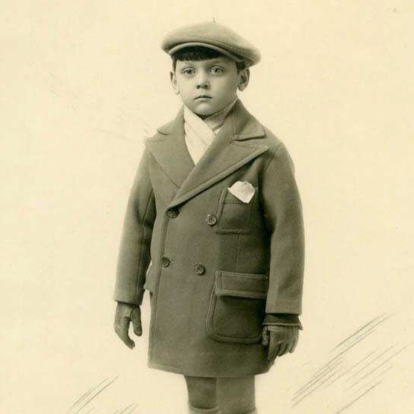
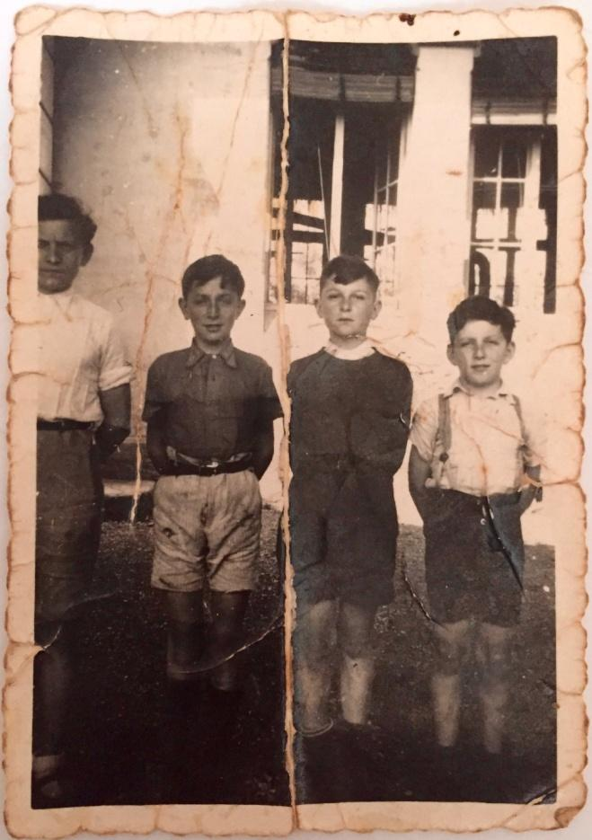
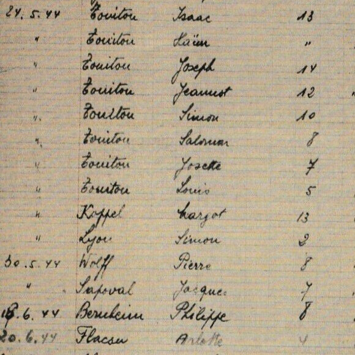
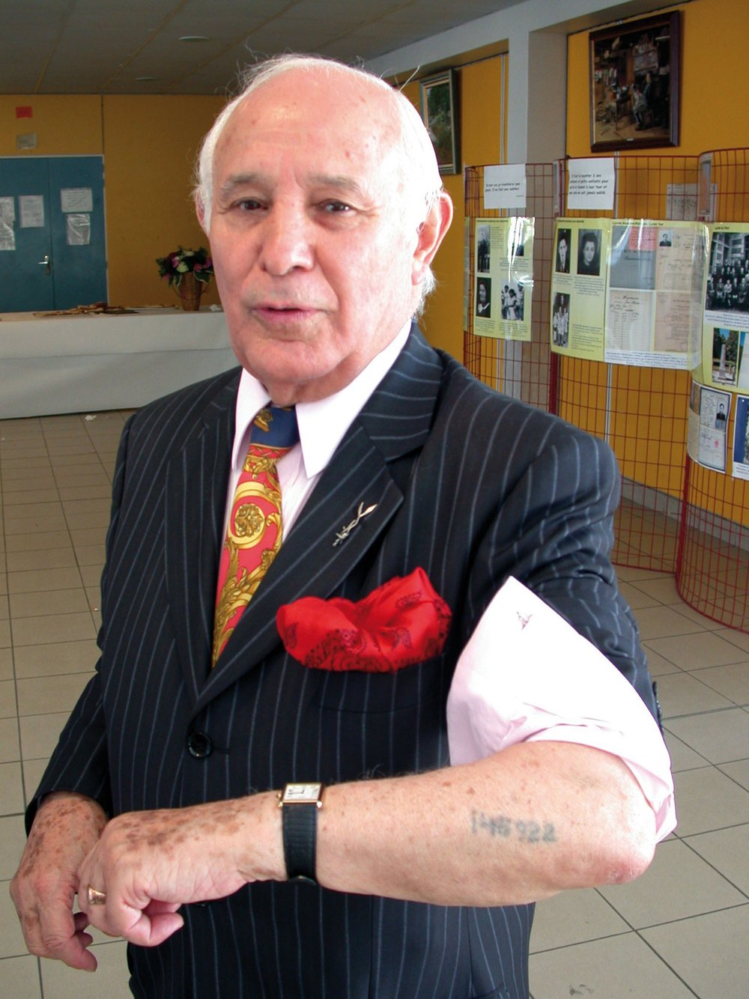

Département Saône-et-Loire
Les biographies
7 fiches liées au département.

Enfants Kadosh

Gérard Marx

Marcel Handzel

Margot Koppel

Max Mardochée Librati (S)

Histoire des jeunes victimes juives de la Shoah
Département Saône-et-Loire
7 fiches liées au département.



